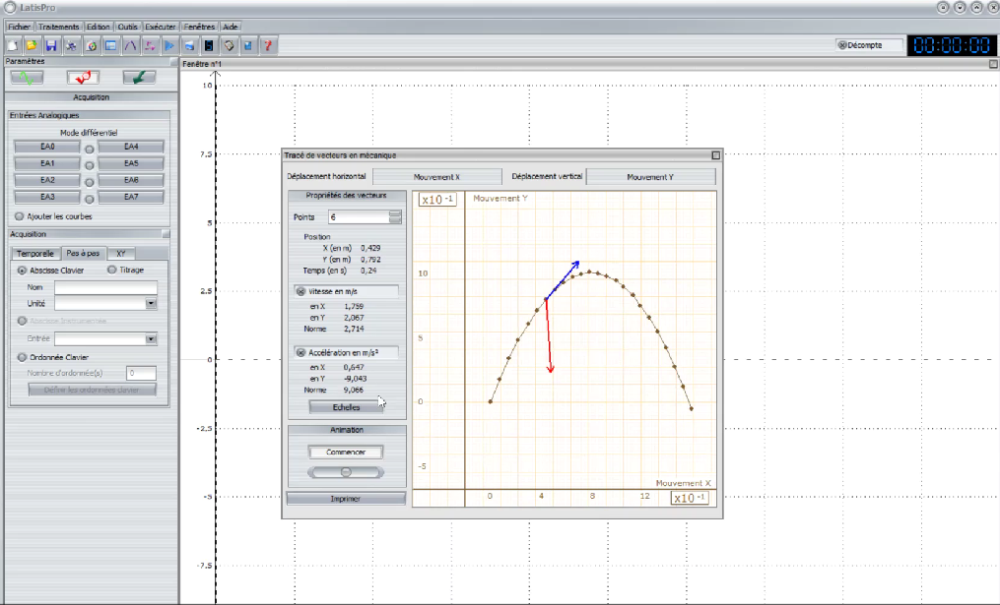
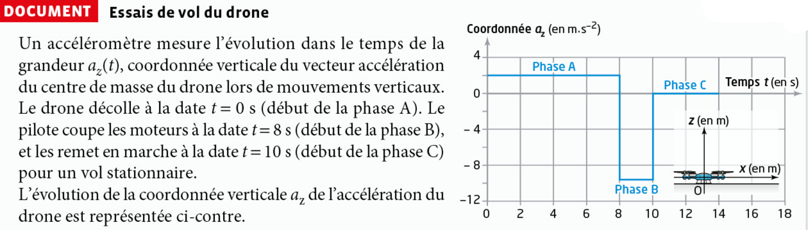
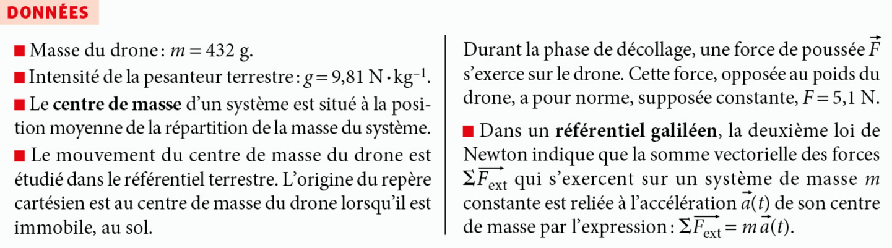
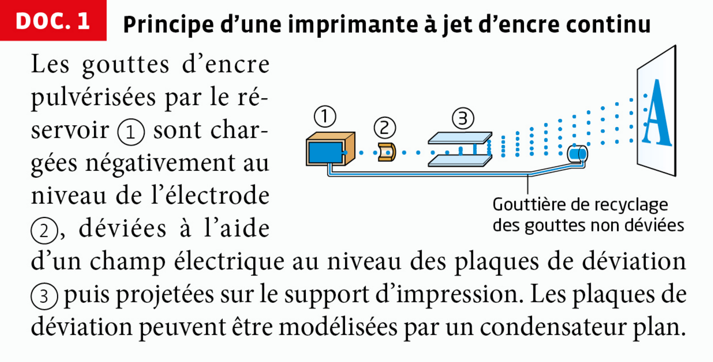
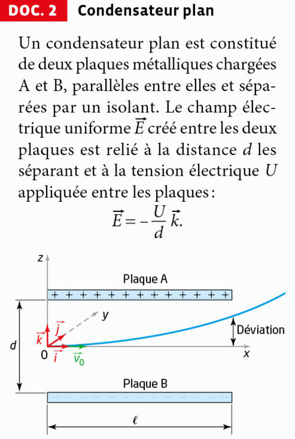
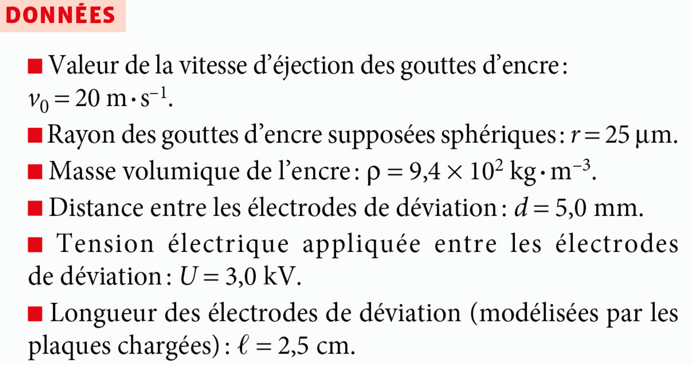
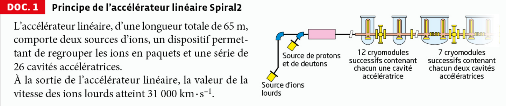
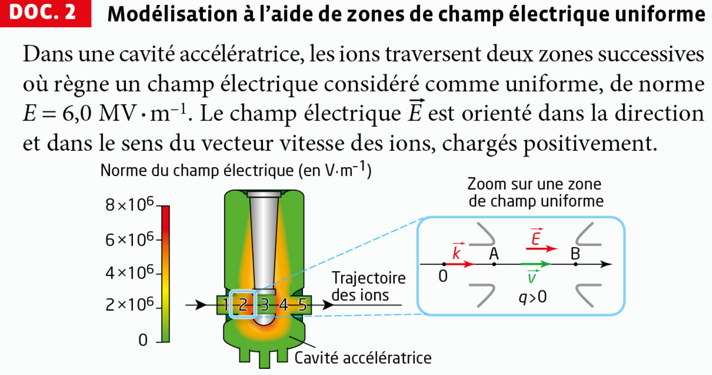
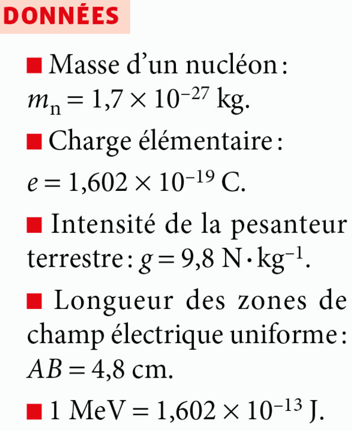
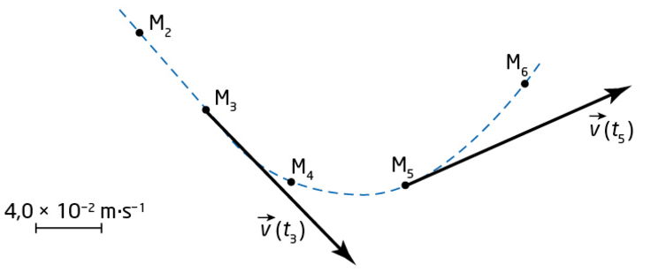

Référentiel
Un référentiel se compose d'un solide de référence par rapport auquel on étudie la trajectoire, et d'une horloge permettant de repérer les dates à chaque position.
1) Référentiel terrestre
Lié à la Terre, adapté à l'étude du mouvement d'un objet proche de la surface terrestre. Tout objet fixe par rapport à la Terre peut servir de référentiel terrestre. On utilise le repère cartésien (O ; i ; j ; k), d'origine O fixe et de vecteurs unitaires constants.
Image représentant le repère cartésien (O ; i ; j ; k) du référentiel terrestre, et trajectoire d'un point mobile.

2) Référentiel géocentrique
Lié au centre de la Terre, utilisé pour l'étude du mouvement des satellites. Les 3 axes pointent vers des étoiles lointaines fixes (galiléen si l'étude ne dépasse pas quelques heures, pour négliger la rotation de la Terre autour du Soleil).
Image représentant les solides de référence attachés aux référentiels terrestre et géocentrique (centre de la Terre, axes vers les étoiles lointaines).

3) Référentiel héliocentrique
Lié au centre du Soleil, utilisé pour l'étude du mouvement des planètes, qui décrivent chacune une orbite elliptique autour du Soleil. Les 3 axes pointent vers des étoiles lointaines fixes.
Image représentant le solide de référence attaché au référentiel héliocentrique : origine au centre du Soleil, axes dirigés vers des étoiles lointaines fixes.

Image représentant le repère de Frenet en un point G d'une trajectoire circulaire.

Exercice — Appliquer les notions de référentiel et de repère
Pour faire la synthèse de cette fiche prérequis, regardez la vidéo bilan sur les référentiels et les repères :
🎬 Voir la vidéo bilan — Référentiels & repèresQCM prérequis — Référentiels et repères
Pour réviser avant le cours, faites le QCM en ligne (Hatier) sur les référentiels et les repères :
📋 Ouvrir le QCM prérequis (Hatier)Caractéristiques d'un vecteur force
Une force est une grandeur vectorielle entièrement définie par 4 caractéristiques :
| Caractéristique | Définition |
|---|---|
| Point d'application | Point où s'exerce la force sur le système (ex. : centre de masse G pour le poids) |
| Droite d'action (portée) |
Droite sur laquelle est porté le vecteur force ; la portée est la droite infinie qui contient le vecteur (direction) |
| Sens | Indiqué par la flèche sur le vecteur ; deux sens possibles sur une droite d'action |
| Norme (valeur) | Longueur du vecteur, exprimée en newton (N) ; représentée par l'échelle choisie (1 cm = x N) |
Force gravitationnelle & poids
La force gravitationnelle, toujours attractive, avec G = 6,67.10⁻¹¹ m³.kg⁻¹.s⁻².


Le poids d'un objet de masse m est la force gravitationnelle exercée par la Terre : vertical, vers le bas, de valeur P = m·g.


Exercice — Le champ de pesanteur est uniforme
Mise en situation : une pomme (m₁ = 150 g) et une enclume (m₂ = 80 kg) sont lâchées au même endroit, en haut d'une falaise, dans le champ de pesanteur g.
Force électrique (Coulomb)
Avec K = 9,0.10⁹ N.m².C⁻². Répulsive si charges de même signe, attractive si signes opposés.
Image représentant l'expression vectorielle de la force électrique (loi de Coulomb).


Pour visualiser les lignes de champ et la force d'interaction selon le signe des charges, ou comparer avec le cas gravitationnel :
🧲 Simulation — Forces et champs électrostatique & gravitationnelExercice interactif — Carte du champ électrostatique créé par deux charges
matplotlib.quiver, la carte ci-dessous représente la direction et le sens du champ électrostatique E créé en chaque point de l'espace par deux charges ponctuelles A et B (les flèches sont normalisées : seules leur direction et leur sens sont représentatifs, pas leur norme). Changez le signe des charges et observez comment la carte du champ se transforme.Forces de contact
La réaction du support se décompose en réaction normale et réaction tangentielle (frottement solide).
Image représentant la réaction du support (normale + tangentielle, frottement solide).

Pour un fluide : poussée d'Archimède (verticale, vers le haut) et frottement fluide (opposé au mouvement).
Image représentant la poussée d'Archimède sur un sous-marin immergé.
🌊 Simulation — Poussée d'Archimède
La tension d'un fil inextensible est dirigée le long du fil, vers l'extrémité opposée au système.
Image représentant la tension du fil exercée sur la luge, dirigée le long du fil.

Exercice — Identifier et calculer les forces
Pour faire la synthèse de cette fiche prérequis, regardez la vidéo bilan sur les forces :
🎬 Voir la vidéo bilan — Rappels de forcesVecteur position et équations horaires
Dans un référentiel donné, à tout instant t, un point G est repéré par son vecteur position OG(t) dont les coordonnées dans le repère cartésien (O ; i ; j ; k) sont les équations horaires de position :
Norme (longueur du vecteur position, en m) :

x(t) − x(t=0) ; y(t) − y(t=0) ; z(t) − z(t=0)
soit, avec O à l'origine à t=0 : x(t) ; y(t) ; z(t)
Définition
vG déf = limΔt→0 vGG' = limΔt→0 [OG(t+Δt) − OG(t)] / Δt
Le vecteur vitesse caractérise la variation du vecteur position en fonction du temps : c'est la dérivée du vecteur position par rapport au temps. Il en résulte que le vecteur vitesse est tangent à la trajectoire au point considéré.
Caractéristiques du vecteur vitesse : direction tangente à la trajectoire au point considéré, sens celui du mouvement.

Définition
aG déf = limΔt→0 [v(t+Δt) − v(t)] / Δt
Un objet a un vecteur accélération non nul si la valeur de sa vitesse varie et/ou si le vecteur vitesse change de direction. Le vecteur accélération est donc la dérivée du vecteur vitesse par rapport au temps (et donc la dérivée seconde du vecteur position).

Exemple : x(t) = 3t² + 2t − 5 ⟹ vx(t) = 6t + 2.
📐 Capacité mathématique — La primitive
Vous savez déjà dériver : c'est l'opération qui fait passer de la position à la vitesse, puis de la vitesse à l'accélération. La primitive est l'opération inverse — tout comme diviser est l'inverse de multiplier.
| OG(t) | —— dérivée ——▶ | v(t) | —— dérivée ——▶ | a(t) |
| ◀—— primitive —— | ◀—— primitive —— |
Règle de calcul : la primitive de a·tn est a·tn+1/(n+1) + C, où C est une constante déterminée par les conditions initiales (valeur connue à t = 0).
| Vous savez dériver → | Fonction f(t) | ← Il faut savoir primitiver |
|---|---|---|
| Dérivée f′(t) | Primitive F(t) + C | |
| 0 | c (constante) | c·t + C |
| a | a·t | ½·a·t² + C |
| 2a·t | a·t² | ⅓·a·t³ + C |
| n·a·tn−1 | a·tn | a·tn+1/(n+1) + C |
Le PFD donne l'accélération : ay(t) = −g = constante.
Primitive de ay : vy(t) = −g·t + C₁
À t = 0 : vy(0) = vy0 (donné) ⟹ C₁ = vy0 ✓
Primitive de vy : y(t) = −½g·t² + vy0·t + C₂
À t = 0 : y(0) = y₀ (donné) ⟹ C₂ = y₀ ✓
À chaque étape, la constante C se détermine grâce à la condition initiale (valeur connue à t = 0).
✏️ Activité — Construire les équations vectorielles
Faites glisser chaque terme dans la bonne case pour compléter les vecteurs, dans l'écriture par coordonnées puis dans l'écriture en base ux, uy, uz.
Complétez maintenant la même position et la même vitesse, mais écrites dans la base ux, uy, uz :
Exercice — Dérivation de vecteurs
Quatre types de mouvements à connaître
- Rectiligne uniforme : trajectoire droite, vitesse constante ⟹ a = 0.
- Rectiligne uniformément varié : trajectoire droite, valeur de la vitesse fonction linéaire du temps ⟹ a constant, colinéaire à la trajectoire (sens du mouvement si accéléré, opposé si ralenti).
- Circulaire uniforme : trajectoire circulaire, valeur de la vitesse constante ⟹ a centripète (porté par le rayon, vers le centre), de norme constante : a = (v²/R) un.
- Circulaire non uniforme : trajectoire circulaire, valeur de la vitesse variable ⟹ a = (dv/dt) ut + (v²/R) un (composante tangentielle + composante normale).
À vous de tracer le vecteur vitesse à partir d'un cliché chronophotographique, comme les points ci-dessus :
QCM — Caractériser un mouvement
1re loi — Principe d'inertie
Dans un référentiel galiléen, lorsqu'un système matériel est pseudo-isolé (forces qui se compensent) ou isolé (aucune force), alors : soit il est au repos, soit le mouvement de son centre d'inertie est rectiligne uniforme (vecteur vitesse constant). La réciproque est vraie.
• Réciproque (vraie ici — c'est ce qui est précisé dans l'énoncé de la loi) : si un système est au repos ou en mouvement rectiligne uniforme (MRU), alors il est pseudo-isolé (ou isolé).
• Contraposée (toujours vraie) : si le mouvement du système n'est pas rectiligne uniforme (trajectoire courbe et/ou valeur de la vitesse qui varie), alors le système n'est pas pseudo-isolé — des forces non compensées s'exercent sur lui. C'est cette forme qui est le plus souvent utilisée en exercice pour justifier la présence de forces.
2e loi — Principe fondamental de la dynamique (PFD)
La somme vectorielle des forces extérieures ΣFext qui s'exercent sur un système de masse m est égale à la dérivée par rapport au temps de son vecteur quantité de mouvement p(t) = m·v(t), dans un référentiel galiléen :
La résultante des forces F est colinéaire au vecteur accélération du centre d'inertie G et de même sens que lui.
3e loi — Principe des actions réciproques
Deux corps en interaction exercent l'un sur l'autre des forces opposées. Le corps A exerçant sur B une force FA/B, subit de la part de B la force FB/A, telle que :
QCM — Les lois de Newton
- Définir le système et le référentiel (galiléen).
- Faire un schéma et placer le repère le plus logique.
- Faire le bilan des forces s'appliquant sur le système à chaque instant t.
- Appliquer le PFD pour trouver les équations horaires du vecteur accélération.
- En déduire les équations horaires du vecteur vitesse (primitive).
- En déduire les équations horaires du vecteur position (primitive).
- En déduire l'équation de la trajectoire (éliminer t).
Mouvement dans un champ de pesanteur uniforme
Système : une bille de masse m, lancée avec une vitesse v0 faisant un angle α avec l'horizontale, dans le champ de pesanteur uniforme g (frottements de l'air négligés devant le poids).
Seul le poids s'applique : ΣFext = P = m·g, donc a = g (indépendant de m). En projetant sur (Ox horizontal, Oy vertical vers le haut) :
Le mouvement est plan : il se déroule entièrement dans le plan formé par v0 et g.
Conditions initiales : à t = 0, position (x₀=0 ; y₀=h) et vitesse (v0x=v₀cos α ; v0y=v₀sin α).
En isolant t = x/(v₀cos α) et en substituant dans y(t), on obtient l'équation de la trajectoire (parabole) :
Exercice — Chute libre sans vitesse initiale (Cas 1)
📋 Exercice bilan — Méthode complète en 6 étapes
Système : la bille, modélisée par un point matériel G (système ponctuel), de masse m = 0,200 kg.
Référentiel : référentiel terrestre, considéré comme galiléen pour ce mouvement (durée courte, échelle locale).
Repère : (O ; i ; j) avec O au point de lancement, axe Ox horizontal (sens du lancement), axe Oy vertical vers le haut.
vy0 = v₀·sin 30° = 8,0 × 0,5 = 4,0 m/s
Forces s'exerçant sur la bille :
- Poids P = m·g : vertical, vers le bas, norme P = 0,200 × 9,8 = 1,96 N
- Frottements de l'air : négligés (hypothèse)
Donne les équations horaires x(t), y(t), vx(t), vy(t) — utile si on cherche une durée, une position à un instant donné ou la trajectoire complète.
Évite les équations horaires si on cherche uniquement une vitesse ou une hauteur — plus rapide quand applicable (pas de frottement ou frottement connu).
Ici, on utilise les deux : PFD pour la trajectoire complète, conservation de l'énergie mécanique pour la hauteur maximale (plus rapide).
A. Méthode Newton — équations horaires
B. Hauteur maximale — conservation de Em (sans frottement)
½mv₀² = ½mvx² + m·g·hmax
hmax = (v₀² − vx²) / (2g) = (64 − 48,0) / (2×9,8) ≈ 0,82 m
C. Portée horizontale
Portée : x = 6,93 × 0,816 ≈ 5,66 m
Mouvement dans un champ électrique uniforme
Une particule de charge q > 0 et de masse m est propulsée dans un condensateur plan, entre deux armatures distantes de d créant un champ électrique uniforme E (orienté de l'armature + vers l'armature −), avec une vitesse initiale v0 faisant un angle α avec l'horizontale.
La particule subit la force électrique F = q·E (le poids est négligeable devant la force électrique à l'échelle des particules chargées). D'après le PFD :
Exercice — Explorer le champ électrique avec la simulation PhET
Repère (Ox horizontal dans le sens de v₀ₓ, Oy vertical dans le sens de E), origine au point d'entrée. Conditions initiales : v0x=v₀cos α ; v0y=v₀sin α ; x₀=y₀=0.
Équation de la trajectoire (parabole) en éliminant t = x/(v₀cos α) :
Application : l'accélérateur linéaire de particules
Un accélérateur linéaire utilise des champs électriques uniformes successifs entre des électrodes pour accélérer des particules chargées le long d'un axe rectiligne, en augmentant leur énergie cinétique à chaque passage. On retrouve ici l'utilisation du théorème de l'énergie cinétique (voir onglet ✓ Énergie).
QCM — Mouvement dans les champs uniformes
Travail d'une force
Physiquement, le travail traduit un transfert d'énergie entre la force qui s'exerce et le système, au cours du déplacement de son point d'application. Il ne dépend que de la force et des positions de départ A et d'arrivée B — pas de la trajectoire suivie, ni de la durée du trajet. Son signe indique le sens du transfert : si WAB > 0, la force cède de l'énergie au système (elle l'accélère) ; si WAB < 0, la force prélève de l'énergie au système (elle le freine). Le travail s'exprime en joule (J).
Le travail d'une force F, constante, sur un déplacement du système d'un point A vers un point B, est noté WAB(F) :
C'est une grandeur algébrique (α étant l'angle entre F et AB) :

force motrice
force ne travaille pas
force résistante
Forces conservatives et non conservatives
| Force conservative | Force non conservative | |
|---|---|---|
| Travail | Indépendant du chemin suivi | Dépend du chemin suivi |
| Réversibilité | Réversible — l'énergie stockée peut être restituée | Irréversible — énergie dissipée en chaleur |
| Signe du travail | Peut être + ou − | Toujours < 0 (résistant) |
| Énergie potentielle | Définie — ΔEp = −WAB | Non définie |
| Exemples | Poids, force électrique (condensateur), force gravitationnelle | Frottements solide/fluide, résistance de l'air |
| Conséquence sur Em | ΔEm = 0 (Em conservée) | ΔEm = WAB(f) < 0 (Em diminue) |
Théorème de l'énergie potentielle
Lorsqu'une force est conservative (poids, force électrostatique, force de rappel élastique...), son travail entre deux points A et B ne dépend pas du chemin suivi, mais uniquement des positions de départ et d'arrivée. On peut alors lui associer une énergie potentielle Ep, grandeur qui ne dépend que de la position du système, telle que :
Comprendre le signe « − » :
Ep diminue (ΔEp < 0)
Ep se transforme en Ec
Ep augmente (ΔEp > 0)
Ec se transforme en Ep (stockage)

Théorème de l'énergie cinétique (TEC)
La variation de l'énergie cinétique d'un système entre A et B est égale à la somme algébrique des travaux de toutes les forces qui s'exercent sur lui :
Conséquence sur l'énergie mécanique :
Avec frottement : WAB(f) < 0 ⟹ ΔEm < 0 : énergie mécanique diminue (dissipée en chaleur).
Exercice — Démonstration et application du TEC
Forces sur la bille sur le trajet A→B (longueur L) :
- Poids P : WAB(P) = P·L·cos(90°−θ) = m·g·L·sin θ = 0,1×9,8×2,0×sin 30° = 0,98 J (moteur ✓)
- Réaction normale N ⊥ au déplacement : WAB(N) = 0 J (ne travaille pas)
- Frottement f : WAB(f) = −f·L = −0,3×2,0 = −0,60 J (résistant ✗)
Exercice — Conservation de l'énergie mécanique
Simulation réalisée par PhET Interactive Simulations, université du Colorado Boulder — phet.colorado.edu (CC BY). Si elle ne s'affiche pas ci-dessus, ouvre-la dans un nouvel onglet ↗.
Activité 1 — Écran « Force nette » : principe d'inertie (1ʳᵉ loi de Newton)
QCM bilan — Synthèse sur la simulation
Activité 2 — TP : Équations horaires d'un mouvement parabolique
Notions : Vecteur position, vitesse, accélération · Mouvement dans un champ de pesanteur uniforme
Capacité expérimentale : réaliser et/ou exploiter une vidéo ou une chronophotographie pour déterminer les coordonnées du vecteur position en fonction du temps et en déduire les coordonnées approchées ou les représentations des vecteurs vitesse et accélération.
A. Mise en situation
Ouvrir Latis Pro, ouvrir et visualiser la vidéo Chap2_TP1_chuteparabolique. Observer le mouvement du mobile et noter la valeur de l'intervalle de temps entre deux positions successives τ = ……………
B. Enregistrement des positions
Placer l'origine du repère. Choisir une origine des positions simple : …………………………………………………………………………………………………...
C. Étude cinématique
1. Observer
Ici la courbe y(x) représente la ………………………..…
Faire les projetés des positions sur ce graphique puis observer, suivant (Ox) et suivant (Oy) : à la montée et à la descente, la vitesse (constante, croissante ou décroissante ?) et qualifier le mouvement (uniforme, accéléré ou décéléré) dans chaque direction.
2. Analyser
Quel est le référentiel d'étude ?
2.1 Étude suivant (Ox)
Créer le graphe de x(t) et modéliser : donner l'équation horaire x(t) = …………………………………
Tracer vx(t) et modéliser. L'équation de vx(t) est-elle cohérente avec celle de x(t) ? Retrouve-t-on les conclusions de l'observation p. 2 ?
2.2 Étude suivant (Oy)
Créer le graphe de y(t) et modéliser : donner l'équation horaire y(t) = a₁t² + a₂t + a₃, avec a₁ = …….. ; a₂ = ………... ; a₃ = ………...
Tracer vy(t) et modéliser : vy(t) = a'₁t + a'₂. Que représente le point d'intersection avec l'axe des temps ?
Retrouver l'équation horaire y(t) à partir de vy(t) par intégration. Comparer.
2.3 Équation cartésienne y(x) de la trajectoire
Établir l'équation y(x) par le calcul à partir de y(t) et x(t). De quelle forme est-elle ? Modéliser y(x) directement à partir du graphe et comparer.

Exemple de pointage sous Latis Pro : le point sélectionné affiche ses coordonnées de position, ainsi que les vecteurs vitesse (bleu) et accélération (rouge) associés.
3. Interpréter
Rappeler les équations de vx(t) et vy(t). En déduire les coordonnées du vecteur accélération. Donner ses caractéristiques (direction, sens, valeur).
Établir, grâce à la deuxième loi de Newton appliquée au mobile, l'expression théorique de l'accélération. Comparer aux coordonnées obtenues par pointage.
4. Conclure
Dans le champ de pesanteur uniforme, le mouvement du projeté d'un point matériel sur la direction horizontale est ……………………………. alors que le mouvement du projeté de ce point matériel sur la direction verticale est …………………………………………………..
Activité 3 — Vol d'un drone
Notions : Centre de masse · Référentiel galiléen · Mouvements rectilignes · Deuxième loi de Newton
Un drone vole grâce à l'interaction de l'air avec ses hélices en rotation.
Quel est le lien entre les forces qui s'exercent sur le drone et son mouvement : a. lors de la montée du drone ? b. lors de la descente du drone ?


• Le centre de masse est situé au point O, origine du repère (par convention lorsque le drone est immobile au sol).
• Phase A (décollage) : de t = 0 s à t = 8 s, soit une durée de 8 s. Forces en présence : poids et force de poussée F, opposée au poids.
• 2ᵉ loi de Newton (axe vertical, vers le haut) : F − mg = m·az, donc az = (F − mg)/m = (5,1 − 0,432×9,81) / 0,432 ≈ 2,0 m·s⁻² — cohérent avec la valeur lue sur le graphe pendant la phase A.
• Phase B (moteurs coupés) : de t = 8 s à t = 10 s, soit une durée de 2 s. Seul le poids agit : le mouvement est une chute libre, d'accélération az = −g ≈ −9,8 m·s⁻².
• Phase C (vol stationnaire) : le drone est immobile donc az = 0, donc ΣF = 0. La nouvelle force de poussée F' compense exactement le poids : F' = m·g ≈ 0,432 × 9,81 ≈ 4,24 N, verticale, dirigée vers le haut.
Activité 4 — TP : Transferts énergétiques dans un pendule
Notions : Énergie cinétique · Énergie potentielle de pesanteur · Énergie mécanique · Amortissement
Capacité expérimentale : étudier l'évolution des énergies cinétique, potentielle et mécanique.
Capacité numérique : représenter, à partir de données expérimentales variées, l'évolution des grandeurs énergétiques d'un système en mouvement dans un champ uniforme à l'aide d'un langage de programmation ou d'un tableur.
1. Réalisation de la vidéo
Réaliser la vidéo d'une quinzaine d'oscillations d'un pendule à l'aide de l'outil caméra. La masse sera lâchée sans vitesse initiale. Attention : placer verticalement un objet visible sur la vidéo permettant de définir une échelle ; la potence doit être visualisée bien verticalement sur la vidéo.
2. Pointage sous Latis Pro
Ouvrir la vidéo Seq3_TP2_pendule sur Latis Pro. Réaliser les mesures de la position de la masse. L'origine du repère doit être choisie sur la position de repos du pendule ; la première mesure est prise lorsque la masse quitte la main de l'expérimentateur.
3. Construction des grandeurs énergétiques
Représenter les courbes d'évolution temporelle des énergies cinétique, potentielle de pesanteur et mécanique du pendule, à l'aide d'un tableur. Pensez à enregistrer régulièrement votre travail.
4. Questions
a. Décrire les étapes réalisées ayant permis d'obtenir les courbes.
b. Représenter un graphe avec les courbes bien identifiées.
c. Décrire l'évolution temporelle des différentes énergies en montrant que : au cours du mouvement il y a des transferts énergétiques dans l'oscillateur, et qu'au cours du mouvement, un oscillateur perd de l'énergie.
d. Proposer d'éventuelles expériences permettant de déterminer les paramètres influençant la période de l'oscillateur.
Activité 5 — Imprimantes à jet d'encre
Notions : Champ électrique créé par un condensateur plan · Mouvement d'une particule chargée dans un champ électrique uniforme
Les imprimantes à jet d'encre continu sont utilisées dans les processus industriels très rapides : marquage en série d'œufs ou de boîtes de conserve par exemple.
Comment contrôler la trajectoire des gouttes d'encre pour obtenir une bonne qualité d'impression ?



1. S'approprier
Identifier les grandeurs physiques ayant une influence sur les caractéristiques du champ électrique.
2. Réaliser
a. Établir l'expression, entre les plaques A et B, du vecteur accélération a d'une goutte d'encre, modélisée par un point matériel de masse m constante et de charge q négative.
b. À la date t₀ = 0, une goutte d'encre pénètre dans la zone de champ uniforme au niveau du point O avec un vecteur vitesse initial v0 = v₀i. Montrer que l'équation de la trajectoire de la goutte s'écrit z(x) = −(qU)/(2 m d v₀²) x².
Par intégration (conditions initiales en O à t=0 : x=0, z=0, vx=v₀, vz=0) :
vz(t) = −(qU)/(md)·t et vx(t) = v₀
z(t) = −(qU)/(2md)·t² et x(t) = v₀·t
De x(t) = v₀·t, on tire t = x/v₀. En remplaçant dans z(t) :
z(x) = −(qU)/(2md) × (x/v₀)² = −(qU)/(2 m d v₀²) × x² — on retrouve bien l'équation attendue.
3. Valider — Communiquer
a. Présenter l'influence des différents paramètres permettant d'ajuster la déviation subie par une goutte d'encre à la sortie du dispositif de déviation.
b. Déterminer la charge électrique que doit porter une goutte d'encre pour obtenir une déviation de 1 mm à la sortie du dispositif de déviation.
En isolant q dans |z(ℓ)| = (|q|·U·ℓ²)/(2 m d v₀²) :
|q| = (2 m d v₀² |z|) / (U ℓ²) = (2 × 6,15×10⁻¹¹ × 5,0×10⁻³ × 20² × 1,0×10⁻³) / (3,0×10³ × (2,5×10⁻²)²)
|q| ≈ 1,3×10⁻¹³ C. La goutte étant chargée négativement : q ≈ −1,3×10⁻¹³ C.
• Le champ électrique E = U/d dépend de la tension U et de la distance d entre les plaques.
• Vecteur accélération : a = −(qU)/(md) k.
• Équation de la trajectoire (double intégration + élimination du temps) : z(x) = −(qU)/(2 m d v₀²) x².
• La déviation augmente avec |q|, U et ℓ² ; elle diminue si m, d ou v₀² augmentent.
• Pour une déviation de 1 mm en sortie : m ≈ 6,15×10⁻¹¹ kg (goutte sphérique), d'où |q| ≈ 1,3×10⁻¹³ C, soit q ≈ −1,3×10⁻¹³ C (charge négative).
Activité 6 — Accélérateur linéaire
Notions : Principe de l'accélérateur linéaire de particules chargées · Aspects énergétiques
Inauguré en 2016, Spiral2 est un accélérateur linéaire installé au GANIL (Grand Accélérateur National d'Ions Lourds) dans la région de Caen. Des particules chargées y sont accélérées, puis projetées sur des cibles de matière pour des études en physique fondamentale ou appliquée.
Comment accélérer des particules chargées à l'aide d'un champ électrique ?



1. S'approprier
Dans la cavité accélératrice schématisée dans le Doc 2, identifier les zones (1, 2, 3, 4 ou 5) dans lesquelles les ions sont accélérés.
2. Analyser — Raisonner
Les ions accélérés sont des ions nickel 5828Ni20+. Comparer les ordres de grandeur des normes du poids et de la force électrique s'exerçant sur eux lors de leur passage dans une zone accélératrice.
3. Réaliser
Calculer la variation d'énergie cinétique d'un ion nickel lors de son trajet du point A au point B.
4. Valider
L'énergie cinétique des ions nickel à la sortie de l'accélérateur linéaire est de 5 MeV par nucléon. Déterminer le nombre de cavités accélératrices nécessaire et la valeur de la vitesse finale de ces ions. Indiquer si les résultats sont en accord avec les informations fournies dans le Doc 1.
5. Communiquer
Réaliser une synthèse permettant de présenter au reste de la classe le principe de l'accélérateur linéaire de particules.
Exercice 12 — Apprendre à rédiger
L'enregistrement de la trajectoire d'un point M se déplaçant dans un plan a permis d'obtenir l'expression des coordonnées du point en fonction du temps :
x(t) = 5,0t + 1 et y(t) = 3,0t
a. Donner l'expression du vecteur position OM(t).
b. Déterminer les coordonnées et la norme de son vecteur vitesse v(t).
• Écrire la relation entre la norme du vecteur vitesse et ses coordonnées.
• Effectuer l'application numérique avec les unités qui conviennent et les chiffres significatifs appropriés.
a. OM(t) = x(t)·i + y(t)·j = (5,0t + 1)·i + 3,0t·j.
b. Par dérivation : vx(t) = dx/dt = 5,0 m·s⁻¹ et vy(t) = dy/dt = 3,0 m·s⁻¹ (coordonnées constantes : le mouvement est rectiligne uniforme).
Norme : v(t) = ‖v(t)‖ = √(vx² + vy²) = √(5,0² + 3,0²) = √34 ≈ 5,8 m·s⁻¹ (2 chiffres significatifs, comme les données).
{kind=link}
Exercice 32 — Vecteur accélération
Les positions successives d'un point mobile M sont enregistrées à intervalles de temps réguliers τ = 100 ms. Une expression approchée du vecteur accélération de M à son passage au point M4 à la date t4 est estimée par :
a(t4) = Δv(t4) / (t5 − t3) = (v5 − v3) / (t5 − t3)
Reproduire les éléments utiles de la figure pour tracer le vecteur accélération, en précisant l'échelle utilisée.

⬇ Télécharger l'image{kind=link}
Construction : on recopie v(t3) et v(t5) tels quels, puis on translate v(t3) pour amener son origine sur celle de v(t5). Le vecteur reliant la pointe de v(t3) ainsi déplacé à la pointe de v(t5) donne Δv(t4).
Échelle de l'accélération : plutôt que choisir une échelle arbitraire, on conserve la longueur graphique trouvée pour Δv(t4) et on change ce qu'elle représente : échellea = échellev / (t5 − t3) = (4,0×10⁻² m·s⁻¹) / (0,200 s) = 0,20 m·s⁻² pour la même longueur que le segment d'échelle initial (avec t5 − t3 = 2τ = 0,200 s).
Résultat : en mesurant Δv(t4) sur la figure (environ 4 fois le segment d'échelle), on obtient a(t4) ≈ 4 × 0,20 ≈ 0,8 m·s⁻², un vecteur dirigé obliquement vers le haut, pointant vers l'intérieur de la concavité de la trajectoire au niveau du « creux » M4-M5 — cohérent avec le passage d'une pente descendante à une pente montante.
{kind=link}
{kind=link}
Exercice 39 — Badminton, un sport dans le vent
Le badminton est un sport dans lequel on frappe un volant, constitué de deux parties : une tête arrondie, qui concentre une grande partie de la masse du volant ; des plumes, qui créent une traînée, modélisée par une force F qui s'oppose au mouvement du volant dans l'air.
Données : masse du volant m = 5,0 g. Intensité de la pesanteur terrestre g = 9,81 N·kg⁻¹.
a. Indiquer le point qui, sur le schéma ci-contre, correspond au centre de masse du volant. Justifier la réponse.
b. À l'aide d'une caméra, un enregistrement du mouvement du centre de masse du volant est réalisé lors d'un service. Le résultat est donné ci-contre. L'intervalle de temps entre deux points de mesure vaut Δt = 50 ms. Décrire, en première approximation, le mouvement du centre de masse du volant sur la portion AB de sa trajectoire.
c. Sur cette partie AB, le poids P du volant est négligé devant la traînée F. Exprimer puis calculer la norme de la force F.
d. Au-delà de la date t = 0,6 s, justifier si le poids du volant est toujours négligeable.
L'expérience de Thomas Pesquet
Le volant de badminton a été l'objet d'une expérience réalisée par Thomas Pesquet à bord de la Station spatiale internationale en 2016.
e. Décrire, dans le référentiel lié à l'ISS, le mouvement du centre de masse du volant lorsqu'il est lâché par Thomas Pesquet. En déduire la valeur a de l'accélération du centre de masse du volant dans ce référentiel.
f. Indiquer la ou les force(s) qui s'applique(nt) sur le volant dans l'ISS. En déduire si son mouvement observé dans la vidéo est cohérent avec la deuxième loi de Newton. Déterminer alors si le référentiel de l'ISS est galiléen.
a. Le centre de masse du volant est le point G₃. En effet, la masse du volant est concentrée dans sa tête arrondie (la jupe), nettement plus dense et compacte que les plumes ; le centre de masse doit donc se trouver près de cette tête, c'est-à-dire au point G₃, et non au milieu de la structure en plumes (G₁ ou G₂), beaucoup plus légère.
b. Les points A, B et les points intermédiaires sont sensiblement alignés : la trajectoire du centre de masse peut donc être assimilée, en première approximation, à un segment de droite — le mouvement est rectiligne. Par ailleurs, pour un intervalle de temps Δt constant, la distance parcourue entre deux points consécutifs diminue à mesure que l'on se rapproche de B : la vitesse du centre de masse diminue donc au cours du temps. En première approximation, le mouvement du volant sur la portion AB est donc rectiligne et ralenti (décéléré).
c. Comme P est négligé devant F, la 2e loi de Newton ΣFext = ma se réduit à F = ma : la norme de la traînée s'exprime donc F = m·a, où a est la norme du vecteur accélération du centre de masse du volant.
On détermine a par la méthode des différences finies à partir des coordonnées (x ; z) de points successifs du graphique (par exemple, en notant M₁, M₂, M₃ les points situés entre A et B, avec B le point suivant M₃) :
v(M₂) ≈ (vx ; vz) avec vx = Δx/(2Δt) et vz = Δz/(2Δt) entre M₁ et M₃, soit environ (15 ; 17) m·s⁻¹, de norme ≈ 23 m·s⁻¹ ;
v(M₃) ≈ (11 ; 14) m·s⁻¹ (calculée de la même façon entre M₂ et B), de norme ≈ 18 m·s⁻¹.
On en déduit a ≈ Δv/Δt ≈ ((11−15)/0,050 ; (14−17)/0,050) ≈ (−80 ; −60) m·s⁻², soit une norme a ≈ 1,0×10² m·s⁻².
D'où F = m·a ≈ 5,0×10⁻³ × 1,0×10² ≈ 0,50 N (les valeurs lues sur le graphique pouvant varier légèrement selon les points choisis, on retiendra surtout l'ordre de grandeur : F est de l'ordre de quelques dixièmes de newton). Ce résultat est bien cohérent avec l'énoncé : P = mg ≈ 5,0×10⁻³ × 9,81 ≈ 4,9×10⁻² N, soit une dizaine de fois plus petit que F — le poids est donc bien négligeable devant la traînée sur la portion AB.
d. Au-delà de t = 0,6 s (soit 12Δt après A), les points du graphique deviennent beaucoup plus resserrés les uns contre les autres : la vitesse du centre de masse du volant est devenue beaucoup plus faible qu'au voisinage de A. Or l'intensité de la traînée F croît avec la vitesse (elle croît même comme le carré de la vitesse), alors que le poids P = mg reste constant. Lorsque la vitesse chute fortement, F diminue donc lui aussi fortement et finit par redevenir du même ordre de grandeur que P, voire plus faible que lui : au-delà de t = 0,6 s, le poids n'est donc plus négligeable devant la traînée — ce qui explique la chute finale, nettement plus verticale et plus rapide, observée en fin de trajectoire vers C, caractéristique d'un mouvement qui se rapproche d'une chute libre.
e. Une fois lâché par Thomas Pesquet sans vitesse initiale par rapport à lui, le volant reste immobile (ou quasiment immobile) par rapport à l'astronaute et à la station : il ne tombe pas vers une paroi de la cabine et ne s'en éloigne pas non plus. Dans le référentiel lié à l'ISS, le centre de masse du volant est donc, en première approximation, immobile. Son vecteur vitesse restant constant (nul) dans ce référentiel, son vecteur accélération l'est également : a ≈ 0 m·s⁻².
f. Bien que l'ISS soit pressurisée, le volant lâché reste quasiment immobile : la traînée qui s'exercerait sur lui (due à un mouvement relatif de l'air) est donc négligeable. La seule force réellement appliquée au volant est son poids P, dû à l'attraction gravitationnelle terrestre. Or à 400 km d'altitude, le champ de pesanteur reste presque aussi intense qu'au niveau du sol (il ne diminue que d'environ 10 %) : ce poids n'est absolument pas négligeable, contrairement à ce que suggère l'apparente « apesanteur ». Si le référentiel lié à l'ISS était galiléen, la 2e loi de Newton imposerait ma = P, donc une accélération du même ordre de grandeur que g (environ 8,7 m·s⁻² à cette altitude) ; or le mouvement observé dans la vidéo correspond à une accélération quasiment nulle (question e.). Il y a donc incohérence avec la 2e loi de Newton si l'on suppose ce référentiel galiléen. On en déduit que le référentiel lié à l'ISS n'est pas galiléen : l'ISS est elle-même en accélération (centripète) permanente autour de la Terre, ce qui en fait un référentiel non galiléen.
{kind=link}
Principe de l'accélérateur de Van de Graaff
Émilie du Châtelet, madame Pompon Newton
Water bottle flip
La protonthérapie sauve la vue
Saut à la perche
Cinématique
- Vecteur position, vitesse (dérivée 1re), accélération (dérivée 2nde)
- 4 types de mouvements : rectiligne uniforme / uniformément varié, circulaire uniforme / non uniforme
- Référentiels galiléens : terrestre, géocentrique, héliocentrique
Dynamique
- 3 lois de Newton (inertie, PFD, actions réciproques)
- ΣFext = m·a dans un référentiel galiléen
- Mouvement plan dans un champ uniforme (pesanteur ou électrique)
- Méthode en 7 étapes pour établir la trajectoire
Énergie
- Travail moteur / résistant / nul (signe de cos α)
- Forces conservatives vs. frottements
- Théorème de l'énergie cinétique
- Conservation de l'énergie mécanique sans frottement
Capacités mathématiques
- Dériver / primitiver une fonction
- Résoudre une équation différentielle simple
- Représentation paramétrique d'une courbe
- Référentiel galiléen
- Référentiel dans lequel le principe d'inertie (1re loi de Newton) est vérifié ; les référentiels terrestre, géocentrique et héliocentrique sont considérés galiléens selon l'échelle de temps et de mouvement étudiée.
- Vecteur vitesse
- Dérivée par rapport au temps du vecteur position ; tangent à la trajectoire, il indique la direction et le sens du mouvement.
- Vecteur accélération
- Dérivée par rapport au temps du vecteur vitesse (dérivée seconde du vecteur position) ; traduit la variation de vitesse (en norme et/ou en direction).
- Principe d'inertie (1re loi de Newton)
- Dans un référentiel galiléen, un système isolé ou pseudo-isolé est soit au repos, soit en mouvement rectiligne uniforme.
- Principe fondamental de la dynamique (2e loi de Newton)
- Dans un référentiel galiléen, la somme des forces extérieures appliquées à un système est égale au produit de sa masse par son vecteur accélération.
- Repère cartésien
- Repère (O ; i, j, k) fixe lié à un référentiel, d'origine O et de vecteurs unitaires constants, utilisé pour repérer la position d'un point mobile par ses coordonnées x(t), y(t), z(t).
- Repère de Frenet
- Repère mobile lié au point en mouvement G, formé des vecteurs unitaires ut (tangent à la trajectoire, dans le sens du mouvement) et un (perpendiculaire à ut, orienté vers l'intérieur de la trajectoire) ; utilisé pour un mouvement circulaire ou curviligne.
- Équations horaires
- Expressions donnant, en fonction du temps t, les coordonnées de la position (ou de la vitesse, de l'accélération) d'un point mobile dans un repère donné ; elles s'obtiennent par intégrations successives du vecteur accélération.
- Principe des actions réciproques (3e loi de Newton)
- Si un système A exerce une force sur un système B, alors B exerce sur A une force de même valeur, même direction et de sens opposé.
- Mouvement dans un champ uniforme
- Mouvement d'un système soumis à une force constante (poids ou force électrique) ; sa trajectoire est parabolique si la vitesse initiale n'est pas colinéaire au champ.
- Champ de pesanteur
- Champ vectoriel g, uniforme à l'échelle de quelques kilomètres à la surface de la Terre (même direction, sens et valeur g ≈ 9,8 N·kg⁻¹ en tout point) ; le poids d'un système est P = m·g.
- Champ électrique
- Champ vectoriel E, créé par exemple entre les armatures d'un condensateur plan, uniforme entre celles-ci ; il exerce sur une particule de charge q une force F = q·E, dans le sens de E si q > 0.
- Travail d'une force
- Grandeur qui mesure le transfert d'énergie associé au déplacement du point d'application d'une force ; moteur si W > 0, résistant si W < 0, nul si la force est perpendiculaire au déplacement.
- Force conservative
- Force dont le travail ne dépend pas du chemin suivi mais seulement des positions initiale et finale (ex. poids) ; s'oppose aux forces de frottement, non conservatives.
- Théorème de l'énergie cinétique (TEC)
- La variation d'énergie cinétique d'un système entre deux instants est égale à la somme des travaux des forces qui s'exercent sur lui.
- Théorème de l'énergie potentielle
- Pour une force conservative (poids, force électrostatique, force de rappel élastique...), le travail ne dépend pas du chemin suivi mais seulement des positions de départ et d'arrivée ; on lui associe une énergie potentielle Ep, telle que W(A→B) = −ΔEp = Ep(A) − Ep(B).
- Énergie potentielle de pesanteur
- Cas particulier du théorème de l'énergie potentielle pour le poids : Epp = m·g·z (z : altitude sur un axe vertical ascendant, avec Epp = 0 choisie en z = 0).
- Énergie mécanique
- Somme de l'énergie cinétique et de l'énergie potentielle d'un système ; elle se conserve en l'absence de frottement.
- Quantité de mouvement
- Vecteur p = m·v associé à un système de masse m et de vitesse v ; la 2e loi de Newton s'écrit aussi comme la dérivée de p par rapport au temps égale à la somme des forces.
- Système isolé / pseudo-isolé
- Système isolé : soumis à aucune force extérieure. Système pseudo-isolé : soumis à des forces extérieures qui se compensent (somme vectorielle nulle).
- Centre de masse (centre d'inertie)
- Point d'un système matériel dont le mouvement, seul, est décrit par la 2e loi de Newton lorsque le système est assimilé à un point ; pour un système à répartition de masse homogène et symétrique, il coïncide avec le centre géométrique.
- Chute libre
- Mouvement d'un système soumis uniquement à son poids (toute autre force, notamment les frottements, étant négligée) ; l'accélération est alors égale au champ de pesanteur g.
- Vecteur position / Trajectoire
- Le vecteur position OM(t) repère un point mobile M par rapport à une origine O au cours du temps ; l'ensemble des positions successives occupées par M constitue sa trajectoire.
- Mouvement rectiligne uniforme
- Mouvement sur une trajectoire rectiligne à vitesse constante ; l'accélération est nulle, conformément au principe d'inertie pour un système isolé ou pseudo-isolé.
▶ Cours 1 — Décrire un mouvement
Vecteurs position, vitesse, accélération · Types de mouvements
▶ Cours 2 — Les lois de Newton
3 lois de Newton · Mouvement dans un champ uniforme
▶ Travail et énergie mécanique
TEC · Conservation de l'énergie mécanique
▶ Schéma animé — Cinématique du point
Hatier-clic · Chapitre 10
▶ Schéma animé — Mouvement et forces
Hatier-clic · Chapitre 11
▶ Schéma animé — Mouvement dans un champ uniforme
Hatier-clic · Chapitre 12
▶ Rappels première — Champs électrique et gravitationnel
Paul Olivier
▶ Le travail d'une force
Paul Olivier
▶ Théorème de l'énergie cinétique
Paul Olivier
▶ Mouvement — Champ électrique
Paul Olivier
▶ Force et champ électrique
Paul Olivier
🧩 Newton — Première
Activité interactive de révision
🧩 Newton — Terminale
Activité interactive de révision
📝 QCM prérequis — Chapitre 10 : Cinématique du point
Hatier-clic
📝 QCM prérequis — Chapitre 11 : Mouvement et forces
Hatier-clic
📝 QCM prérequis — Chapitre 12 : Mouvement dans un champ uniforme
Hatier-clic
📝 QCM maîtrise — Chapitre 10 : Cinématique du point
Hatier-clic
📝 QCM maîtrise — Chapitre 11 : Mouvement et forces
Hatier-clic
📝 QCM maîtrise — Chapitre 12 : Mouvement dans un champ uniforme
Hatier-clic
Exercices p. 260 à 269 (cinématique), p. 284 à 295 (dynamique & énergie), Activité p. 277 (accélérateur de particules), AD p. 277.